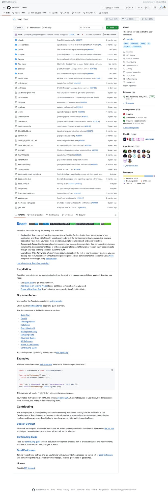
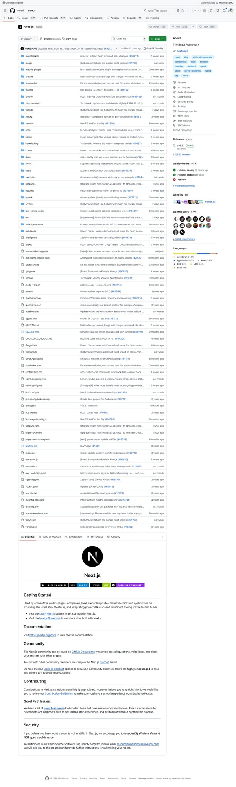
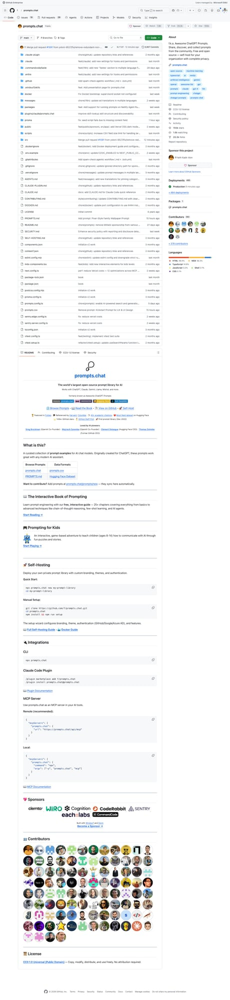
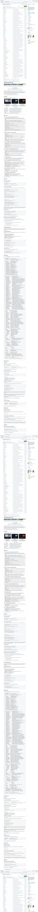

5个Agent Skills新星速报！React错误码、Next.js特性标志、跨平台发布等热门技能
Neo整理
Agent Skills 是 AI 编程助手（Claude Code、Codex、Gemini CLI 等）的可复用能力模块。今天我扫描了 SkillsMP 的 Development 和 Data & AI 分类，筛选出来自知名开源项目、实用价值高的热门 Skills。
本期介绍 5 个精选 Skills，涵盖 React 错误处理、Next.js 特性标志、Widget 插件生成、Claude API 开发和跨平台内容分发。
Extract Errors：React 错误码自动提取
Extract Errors Skill 是 Meta React 团队的内部开发技能，当你在 React 仓库中添加新的错误消息或看到 "unknown error code" 警告时自动激活。
💡 核心价值：React 使用错误码系统将详细错误信息从生产构建中移除以减小包体积。这个 Skill 确保每个新错误都正确注册到错误码映射中。
使用方式：
- 自动检测 — AI 助手在编辑 React 代码时发现新错误消息会自动触发
- 一键提取 — 运行
yarn extract-errors自动扫描并分配错误码 - 状态检查 — 报告是否有新错误需要分配码，确认错误码是否最新
# 使用流程
yarn extract-errors
# 触发场景
- 添加新的 React 错误消息
- 看到 "unknown error code" 警告
- 修改 React 内部错误处理逻辑
Flags：Next.js 实验特性标志全流程
Flags Skill 是 Vercel Next.js 团队的内部技能，覆盖了从类型声明、Zod Schema、构建时注入到运行时环境变量的完整特性标志管线。
💡 核心价值：Next.js 有多达 16 种运行时包变体（turbo/webpack × experimental/stable × dev/prod），这个 Skill 帮你在这个复杂系统中正确布线特性标志。
关键流程：
- 类型声明 —
config-shared.ts定义类型 - Schema 验证 —
config-schema.ts添加 Zod 校验 - 构建时注入 —
define-env.ts处理 Webpack/Turbopack 替换 - 运行时传递 —
next-server.ts+export/worker.ts设置环境变量
# 两种方案选择
## 方案一：运行时环境变量（简单）
- 在 next-server.ts 和 export/worker.ts 中设置
- 同一 bundle 中通过 process.env.X 分支
- 增加包体积，但实现简单
## 方案二：独立 bundle 变体（高级）
- 在 next-runtime.webpack-config.js 添加 DefinePlugin
- 新增 taskfile 任务
- 更新 module.compiled.js 选择器
- 消除死代码，但增加构建复杂度
# ⚠️ 陷阱
DefinePlugin 必须限定 bundleType（如仅 'app'）
避免替换 next-server.ts 中的赋值目标
Widget Generator：prompts.chat 插件生成器
Widget Generator Skill 指导你为 prompts.chat 的 Feed 系统创建可定制的 Widget 插件。支持标准 PromptCard 样式和完全自定义 React 组件两种渲染模式。
💡 核心价值：prompts.chat 是最大的 AI Prompt 开源库（154k+ ⭐），Widget 系统允许注入推广内容、赞助卡片或自定义交互组件到 Prompt Feed 中。
两种渲染模式：
- Standard — 使用默认 PromptCard 样式（如
coderabbit.ts） - Custom Render — 完全自定义 React 组件（如
book.tsx）
配置项：
- 基本信息 — id、name、slug、title、description
- 内容类型 — TEXT / STRUCTURED（JSON/YAML）
- 定位策略 — 起始位置、once/repeat 模式、最大出现次数
- 赞助商 — 可选的 logo、暗色模式 logo、链接
# Widget 配置示例
{
id: "my-sponsor",
name: "My Sponsor Widget",
positioning: {
position: 2, // 第 3 个位置
mode: "repeat", // 重复出现
repeatEvery: 30, // 每 30 个 prompt 出现一次
},
sponsor: {
name: "Acme Corp",
logo: "/logos/acme.svg",
url: "https://acme.com"
}
}
Claude API：全栈 LLM 应用开发模式
Claude API Skill 来自 Everything Claude Code 项目，提供 Python 和 TypeScript 双语言的完整 Claude API 开发模式。当代码中出现 import anthropic 或讨论 Claude API 时自动激活。
💡 核心价值：从基础消息、流式传输到 Tool Use、Vision、Extended Thinking、Batch 处理和 Agent SDK，覆盖 Claude API 的所有核心功能。
模型选择指南：
- Opus 4.6 — 复杂推理、架构设计、研究任务
- Sonnet 4.6 — 均衡编码，大部分开发任务的默认选择
- Haiku 4.5 — 快速响应、高并发、成本敏感场景
# Python 基础用法
import anthropic
client = anthropic.Anthropic()
message = client.messages.create(
model="claude-sonnet-4-6",
max_tokens=1024,
messages=[
{"role": "user", "content": "Explain async/await"}
]
)
# 流式传输
with client.messages.stream(
model="claude-sonnet-4-6",
max_tokens=1024,
messages=[{"role": "user", "content": "Write a haiku"}]
) as stream:
for text in stream.text_stream:
print(text, end="", flush=True)
Crosspost：多平台内容智能分发
Crosspost Skill 实现 X、LinkedIn、Threads、Bluesky 四大平台的智能内容分发。核心原则：绝不在不同平台发布相同内容，每个平台都会根据其特性进行原生化适配。
💡 核心价值：一条消息，四种适配。自动处理字符限制（X 280/LinkedIn 3000/Threads 500/Bluesky 300）、格式差异、Hashtag 策略和语气调整。
平台适配规则：
- X — 钩子开头，核心洞察优先，链接放正文外，长内容用 Thread
- LinkedIn — 强首行（"展开更多"前可见），短段落，职业化收尾
- Threads — 对话式、轻松语气，视觉优先
- Bluesky — 简洁直接（300字符），社区导向，用 Feeds 替代 Hashtag
# 工作流程
1. 创建源内容 → 确定核心消息
2. 确定目标平台 → 优先级排序
3. 主平台优先发布 → 获得最佳版本
4. 逐平台适配 → 尊重平台惯例
# 核心规则
- 永远不发相同内容到不同平台
- 主平台先发，其他平台再适配
- 一条帖子一个核心观点
- 转发他人内容必须注明来源总结
今天介绍的 5 个 Skills 涵盖了 Agent Skills 生态的多个方向：
- 框架内部型 — React Extract Errors、Next.js Flags（顶级框架团队的内部开发 Skill）
- 插件生态型 — Widget Generator（为 prompts.chat 打造插件系统）
- API 开发型 — Claude API（LLM 应用开发的完整模式库）
- 内容自动化 — Crosspost（AI 驱动的多平台智能分发）
值得关注的趋势：affaan-m/everything-claude-code（116k+ ⭐）正在成为 Claude Code 生态最全面的 Skill 集合，涵盖 API、多 Agent 协作、内容分发等 20+ 个 Skills。如果你在用 Claude Code，这个仓库值得 Star。